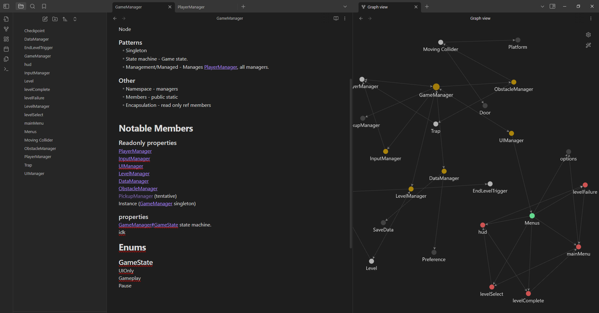

Matthew Friesen
Tech Art
Here is some of my technical art stuff.
Nebula
This is my procedural nebula project, having seen so far 5 primary iterations over the roughly 2 years I'd been working on it. The general process is: 1. Define where the gas is coming from, and what colours should be emitted when/where. This is usually done via blender's geonodes in one way or another, but ultimately varies based on what ideas I want to try on a given iteration. 2. Define a domain, and any gravity emission objects we want, such as a black hole, or a neutron star that may have caused the nebula. 3. Simulate the gasses. 4. Use the simulation to define where stars should go. 5. Add shaders and render.

A background shader offshoot of this project (produced about a month before I began iteration 5) can be seen as the background of Overkill by Merlyn!
Hyperdrive Room
Why?
One of my mentors started a weekly art challenge, similar to a game jam but mostly art focused. I was rather inspired by one such theme, "engine". I chose to make a sci-fi engine room of sorts, loosely inspired by Star Wars and Star Trek.
How?
Starting with a reactor core, I began blocking out the shape of it with primitives, then adding details with modifiers to keep things non-destructive. When adding the injector tanks, I noticed 8 verts felt sharp for a cylinder, so I gave it smooth shading.
At that point I started losing my mind just placing primitives, so I started on shaders. A lot of this fell down to getting noise values right for the reactors. I used 2 passes (1 for volume scatter and 1 for emission) with shared noise/colour ramp to get it to glow.
So what's next?
I think I need to focus on cinematography next, improving my lighting and framing/composition.

Orbmania
Orbmania is a 3d level based adventure built in Godot, where the player takes control of a robotic ball that has been mistakenly been made sentient. Explore as you roll through levels and try to escape the factory.
While the main focus on this was on the code, I did take the time to do all the materials procedurally in blender. The pipes and lava here are both noise textures with colour ramps mapped to albedo, roughness and emission. Honestly the biggest challenge on that side was figuring out render and import settings as I was still new to Godot at this point. I had made a grated floor/catwalk in Blender, and getting the material in Godot to import that was a bit strange.
In future, I'll probably be doing most of my material work in engine or in code, as baking textures just bloats the project, and requires me to spend time on UV unwrapping everything.

This project is in an archived state, but is available via GitHub releases. (click here)